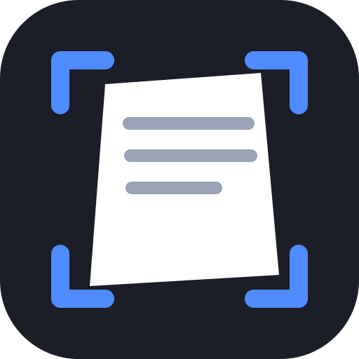

Pocket Scanner
Snap a document, drag the four corners onto its edges, and save a flat, straight scan to your photos.
- Lay the page on a contrasting surface.
- Drag each blue circle to a corner of the page.
- Pick a look, then save.

Snap a document, drag the four corners onto its edges, and save a flat, straight scan to your photos.